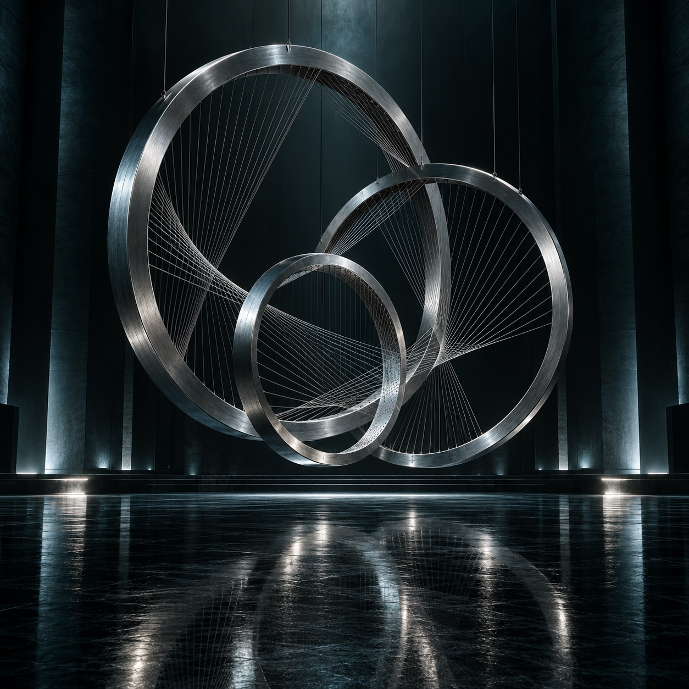

APPLE SILICONRUACH / YuE2 · BF1648 kHz STEREOAUTO DURATION
HEAR IT FOR YOURSELF
Hear Pixel Music. Made on a Mac.
Start with a full song selected by Tomislav, then explore disco, after-hours analog, electronic cinema and art-pop. Every track was generated locally in Pixel Music.

FEATURED · FULL SONG
I picked it up without a thought
2:30 · YuE2 BF16
Dark electronic music with organic textures, a deep groove and evolving harmony. Selected by Tomislav.
The preview could not load. Retry with the player, or open the MP3 below.
Disco music with four-on-the-floor beat, funky bassline, bright synth stabs, dance energy
YuE2 · Ruach First Wave BF16 · Generated locally on a Mac
Instrumental · Auto duration · Score planning off
Full track · No cuts or fades · Web copy with playback headroom
ANALOG · AFTER HOURS
Nightshift
1:30 · Ruach BF16
An elastic bass motif, acid-synth answers and a dry, spacious drum-machine groove.
The preview could not load. Retry with the player, or open the MP3 below.
[verse]
You took the long way home again
I watched the numbers change
A cup beside the empty chair
The room stayed much the same
[chorus]
Leave one thing unfinished
Let it pull me through
I can live with a little distance
If the distance moves
[verse]
The train went north without us
Your ticket folded twice
I kept the part you tore away
You kept the other side
[chorus]
Leave one thing unfinished
Let it pull me through
I can live with a little distance
If the distance moves
[outro]
Your ticket folded twice
You kept the other side
Real local renders · YuE2 and Ruach First Wave BF16, as labeled. The featured song and Disco are presented in full; the other three Ruach demos have short fades. Web copies include playback headroom. Original masters stay untouched. No autoplay.
Pixel Music 0.4.6 · Native Create view. A staged demo project with real 30-second validation renders; editor inputs and covers are demonstration content.
02 / FROM IDEA TO ANOTHER TAKE
A little direction. A lot to explore.
01
Describe the song
Write your lyrics. Set the mood, instruments and performance. Auto duration lets the composition find its ending, within YuE2’s six-minute limit.
02
Shape the composition
Generate melody and chords, focus on melody alone, or go straight to audio. Import and edit an ABC score when you want more control.
03
Keep every version
Listen, compare and revisit. New renders preserve the original master, with saved settings, checksums, scores and audio latents.
03 / MADE FOR EXPLORATION
Stay close to the music.
Your queue and recent generations together. A library of takes. The deeper controls are there when you need them.
Tempo, key and composition controls in one place. Edit a score, revisit a take, or create cover art with an existing local FLUX Klein installation.
Signal, texture, motion. Concept artwork for Pixel Music.
04 / FIND YOUR SOUND
Your taste. Your next direction.
Preferences, styles, voices and LoRA sounds in one place. Choose a sound with Use; Pixel Music downloads it once and keeps its model compatibility clear.
Ruach First Wave BF16 is now the default music model. Create, score planning and Emotional Composer share the existing local YuE2 engine. Original remains available, and old takes keep their exact model and settings.
01
Set up once
One installer prepares the shared runtime and Ruach model, with progress, cancellation and clear errors. Existing verified assets are reused.
02
Keep your workflow
Refine, Surprise, lyrics and image inspiration still offer local Qwen or optional ChatGPT. Ruach writes the score and renders music locally using BF16 precision.
03
Keep your sounds
Existing LoRAs and trained styles use Original YuE2. Clear a learned sound to return to Ruach. Lyrics, accepted scores, previous takes and source provenance stay intact.
ChatGPT assistance sends the requested text, lyrics, selected presets and emotional direction to OpenAI; image inspiration also sends the image you choose. Your plan and usage limits apply. Your recordings and training dataset are not attached. Read the privacy details. Real account sign-in requires browser consent; suggestions and musical adherence still need your review.
TASTE brings preferences and compatible LoRA sounds together. Downloadable sounds use one Use action with progress; local training remains experimental. Playback and waveform seeking stay inside each track. Codex and Sirius-compatible hosts can use opt-in local MCP; its image-inspiration tool continues to use local Qwen.
06 / TRAIN YOUR SOUND
Make it your sound.
01
Train a local style
Add your recordings, review ranges up to six minutes and reserve songs for testing. Train both the music planner and audio decoder on your Mac.
02
Listen before you keep
Compare the original model with your trained style at matched levels. Approve a version you like, then use it in Create.
03
Keep your originals
Your recordings stay untouched. Checkpoints, settings and generated takes stay on your machine.
Training is experimental and requires separately installed local training assets. Existing users should prepare their dataset again for the corrected joint training workflow. No recordings or model weights are included in the app download.
EARLY ACCESS · VERSION 0.4.7
Make room for your next song.
For Apple Silicon Macs running macOS 14 or later. First setup downloads approximately 7 GB of Original/shared assets plus the 7.3 GB Ruach model. Allow about 24 GB free, or 16 GB with Original installed. Existing assets are reused. The setup installer requires uv.
Your studio starts here
Download Pixel Music for Apple Silicon. Signed with Apple Developer ID and notarized by Apple. No account needed for local music generation; ChatGPT writing assistance is optional.
Ruach merged weights use CC BY-NC-SA 4.0; Original YuE2 weights use CC BY-NC 4.0. Model license terms apply; this preview is not a commercial-use grant.